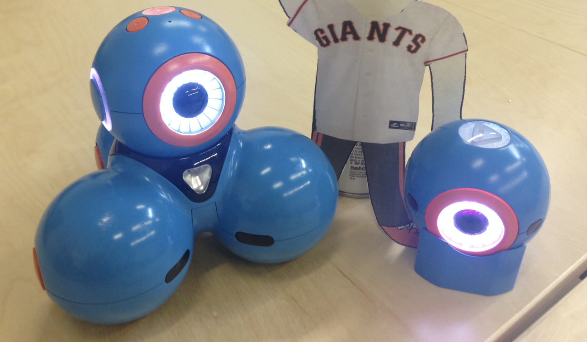
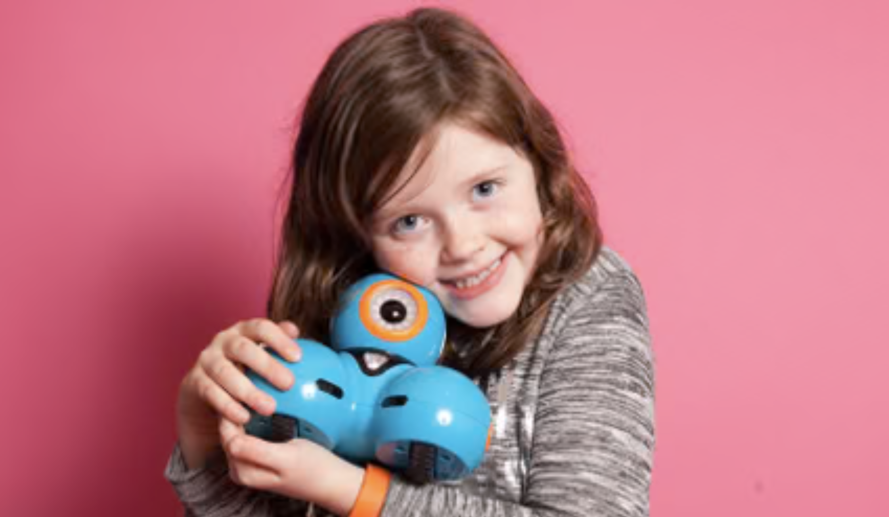
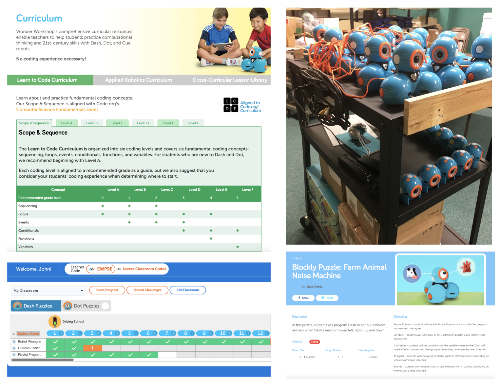

Dash: Wonder Workshop
My Role
Mechanical Design Engineer -> Product Team Lead -> Director of Product Program Management
At Wonder Workshop, I joined as employee #12 and the first mechanical engineer. I eventually led the product team which consisted of 2 mechanical engineers and an industrial designer. When I rejoined the company after leaving for 3 years, I led the product management, program management and content teams. Full team size was 11 people and included our product managers, curriculum specialists, an editor, an animator and an illustractor.
Lowering the barrier
of entry
When designing the Dash robot for Wonder Workshop, I wanted ALL kids to feel like this robot was for them. To do this I did a color study to ensure that our color didn’t make the robot feel like a boy’s toy or a girl’s toy. I pushed for a brighter blue with more teal in it than our original darker blue prototypes. This color had a broader appeal with our testers. While many in our startup did not want a change at first, they were convinced with the results from the studies.


First-time user experience
A lot of kids think that robots are not their thing. With a user like this, I knew that the first 10 seconds with the robot were critical to change that perception. I had the team focus on the first time user experience so that when the robot was powered on it made an instant connection with the child. The result was that Dash acts like it is being startled awake, looks around, then up, blinks and says “Howdy-Do!” Testing consistently showed users’ faces lighting up and smiling. This quick introduction often makes an instant connection with the user and the result is that they are excited to see what they can do with Dash.
Designing for teachers and school districts
When I returned to Wonder Workshop, the company had shifted from targeting consumers to targeting the education market. We had a great product for kids, but a product that was missing key elements needed to scale in the education market.
I focused my team on research through interviews, weekly user testing and looking into our app metrics. I prioritized the features with the largest impacts from the research: giving district administrators and teachers confidence in users our product, making it easier for IT teams to set up our apps, and making it easier for teachers to set up and use Dash effectively.

Saving time
What seemed like a P2 feature at first, I realized how important roster importing was when a district IT leader explained without roster imports their team wouldn’t whitelist our apps for use in the district. This feature not only save IT teams time, but was essential to get our apps approved and the software ready to go early in the school year.
For lesson planning, we focused on only using common objects in classrooms and activities with little to no setup and cleanup time. I looked into how to store the robots. We observed that when you plug in 20 robots at a time to charge, they all turn back on because the default behavior was to power on when plugged in. We changed that.
Giving teachers
super powers
Teachers needed effective classroom management tools to teach 25+ students in one room. Through multiple iterations of testing and building, we landed on dashboards to give a general view of where each student is and a detailed view that shows where a student is stuck and possible solutions to help them. Teachers could teach a new subject effectively and with confidence, even with a large class with a wide range of abilities.
Giving confidence
I saw through interviews with school district administrators that one key to bringing on new curriculum was to provide professional development. My team worked with an outside group to create Teach Wonder, our teacher training course. Breaking down the fundamentals of coding into digestible categories led to more teachers having more confidence that they can successfully teach this subject.
This professional development course also gives districts confidence that their educators will be ready to teach this challenging subject and removes one key blocker when it is time to make the purchasing decision.
Used at more than
40,000
schools world wide
Sold more than
700,000
units and counting
Loved by students in over
65
countries around the world